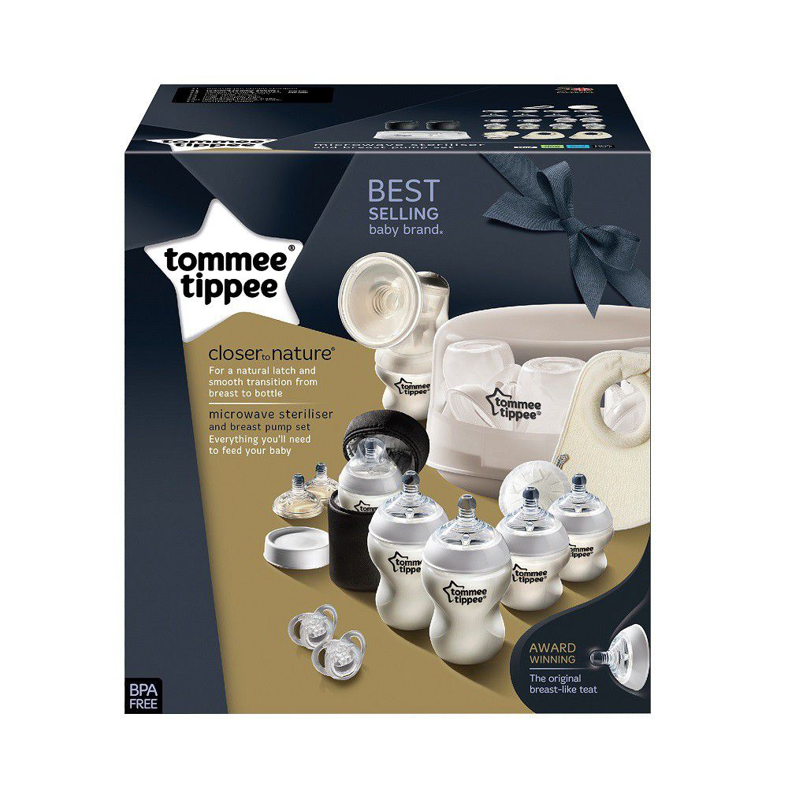
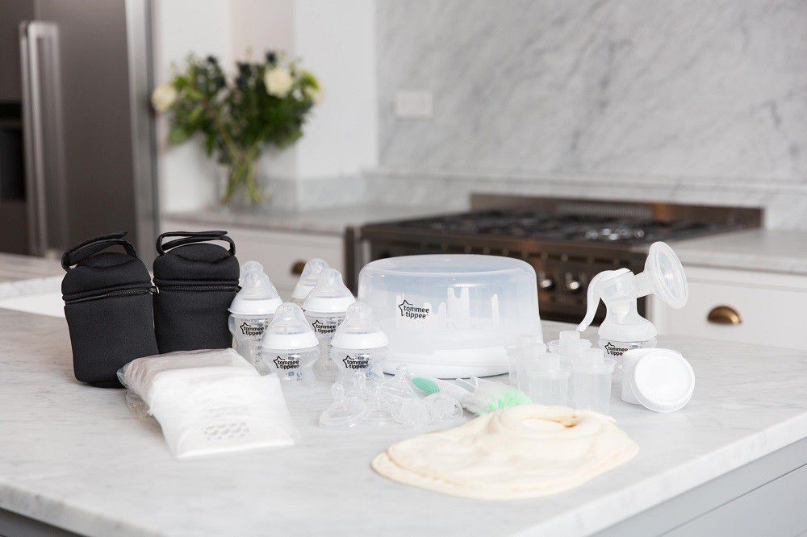
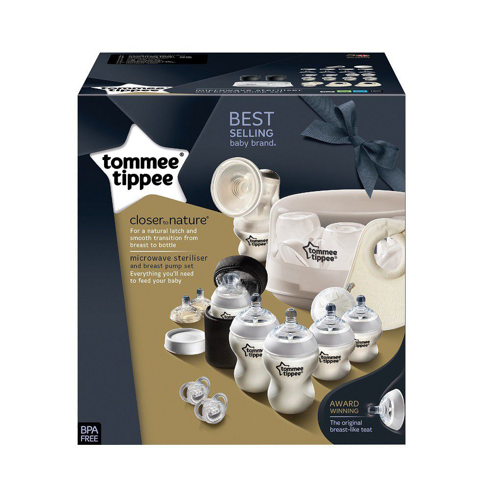
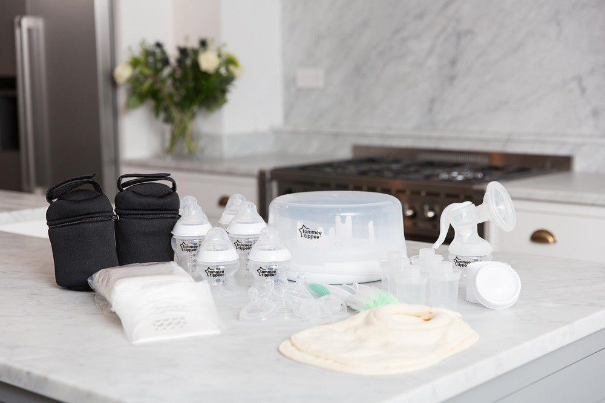
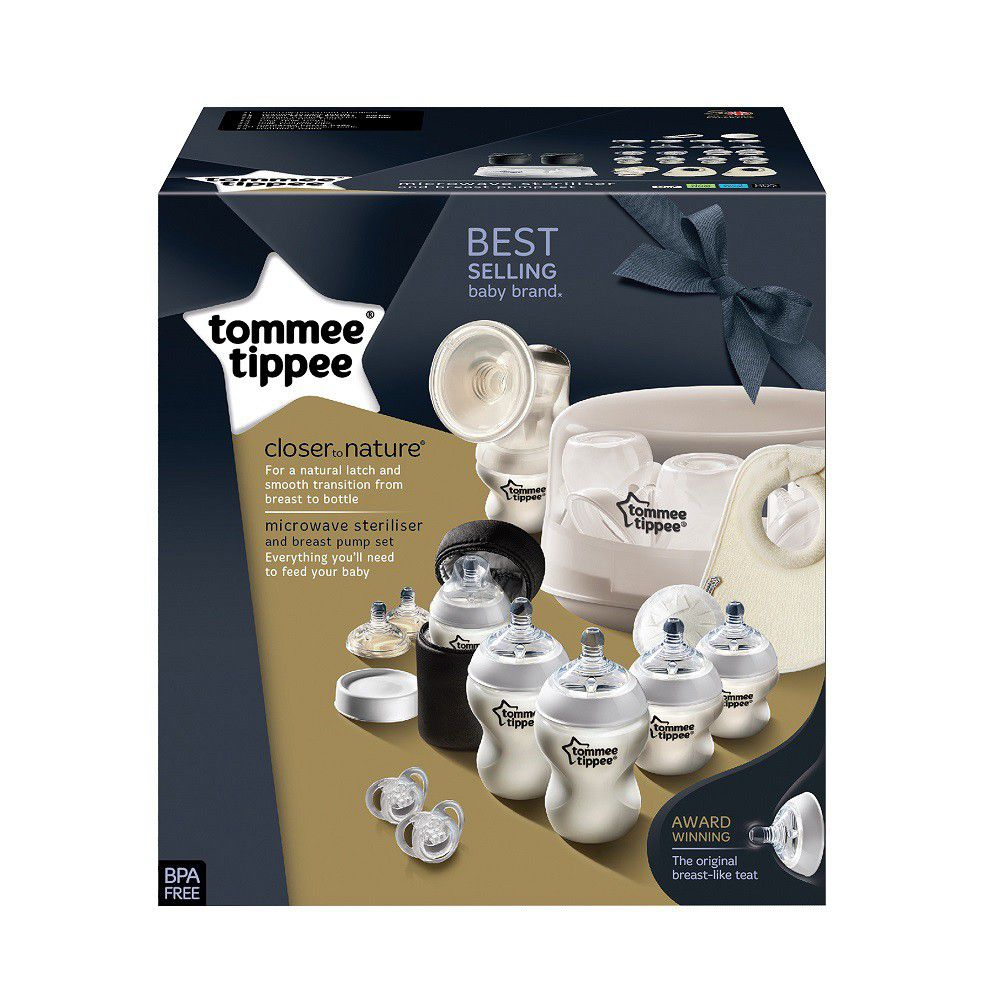
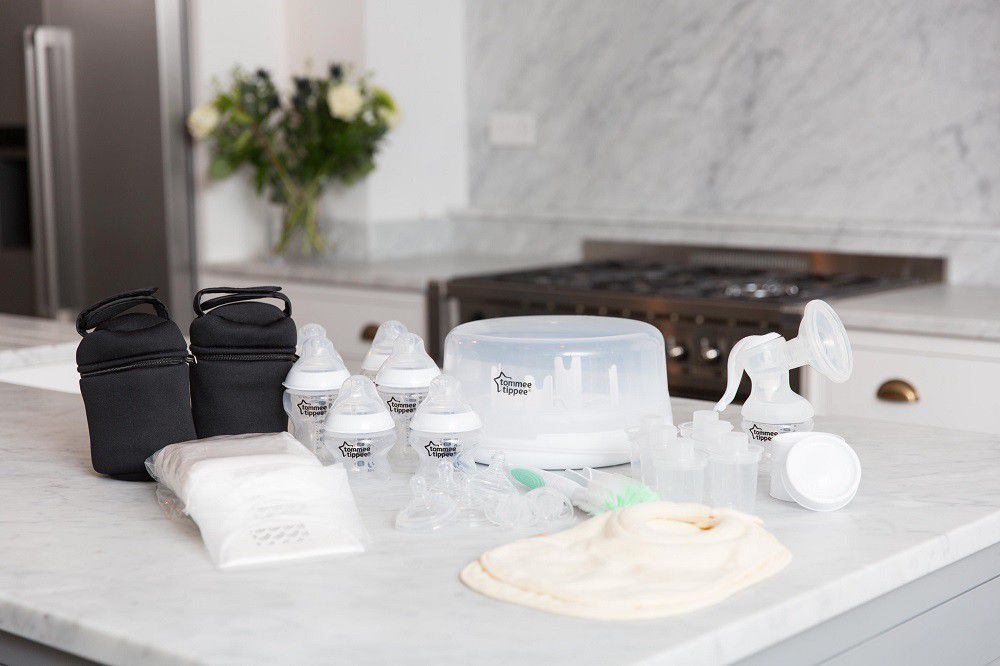
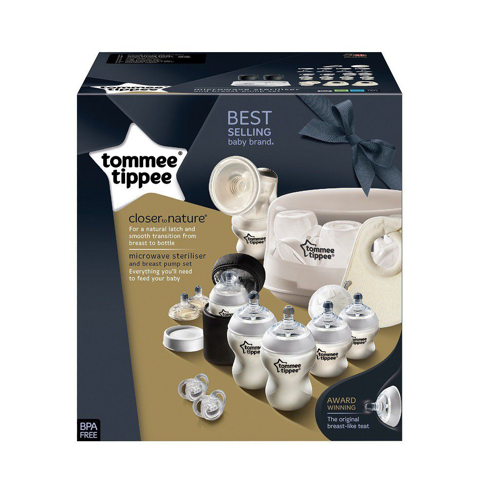
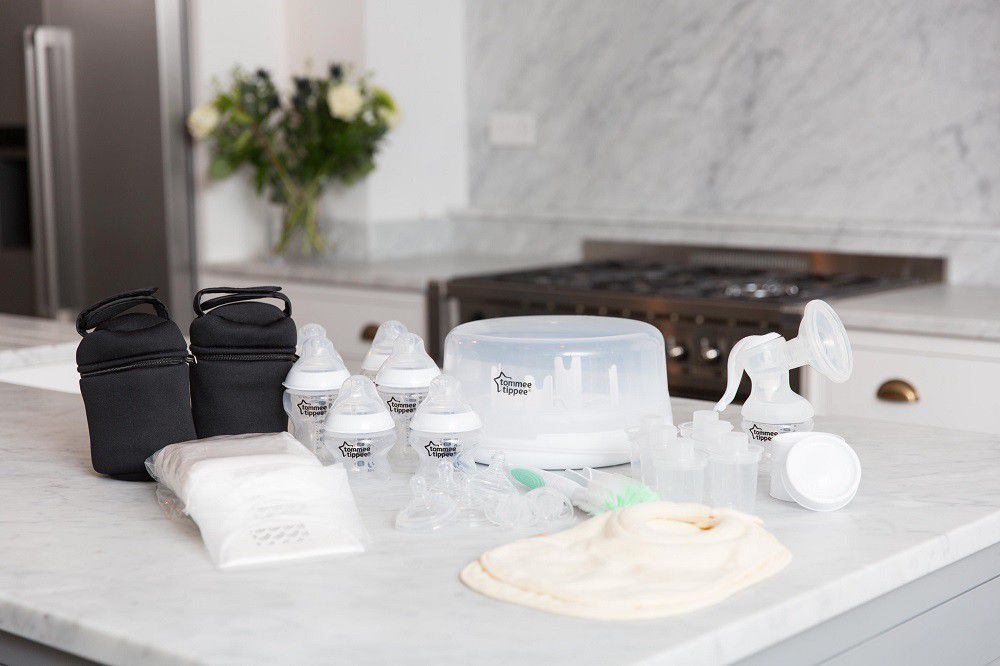

In Stock 145 available: CPT/JHB

The set includes everything you need to start your expressing journey. The Tommee Tippee Microwave Steriliser is the fast, simple way to protect your baby's tummy from harmful bacteria. The Closer to Nature manual breast pump makes it reassuringly easy to give baby the benefits of breast milk when feeding time requires a bottle. Small and lightweight, the Closer to Nature Manual Breast Pump comes with a soft silicone horn for added comfort.
If you're a busy breastfeeding mum who wants to express, the Microwave Steriliser & Breast Pump Set contains a complete solution to help keep things simple. The sets contents makes it easy to store, transport and feed comfortably - providing an ideal solution for feeding on the go. The set comes with 6 x Closer to Nature bottles, with next stage teats for when your little one gets.
| Catogeries | Baby & Toddler / Baby Food & Nutrition / Nursing / Sets & Kits |
|---|---|
| Brand | Tommee Tippee |
| Warranty | Limited (6 months) |
| What's in the box |
1 x Microwave steam steriliser 1 x Manual breast pump 2 x Insulated bottle bags 50 x Disposable breast pads 2 x 0-6 m soothers 4 x 260 ml bottles 2 x 150 ml bottles 2 x medium flow teats 2 x fast flow teats 2 x Milk feeding bibs 4 x Milk storage lids |
| Assembled Dimensions | 27 x 28 x 30 cm/td> |
| Barcode | 5010415235855 |